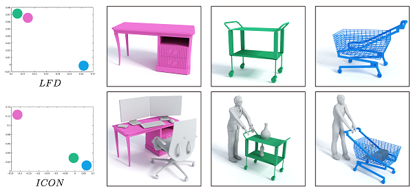
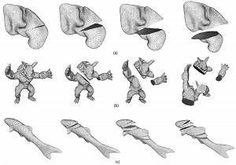

2017
 |
Many approaches to shape comparison and recognition start by establishing a shape correspondence. We ``turn the table'' and show that quality shape correspondences can be obtained by performing many shape recognition tasks. What is more, the method we develop computes a fine-grained, topology-varying part correspondence between two 3D shapes where the core evaluation mechanism only recognizes shapes globally.This is made possible by casting the part correspondence problem in a deformation-driven framework and relying on a data-driven "deformation energy" which rates visual similarity between deformed shapes and models from a shape repository. Our basic premise is that if a correspondence between two chairs (or airplanes, bicycles, etc.) is correct, then a reasonable deformation between the two chairs anchored on the correspondence ought to produce plausible, "chair-like" in-between shapes. |
2015
|
 |
We introduce a contextual descriptor which aims to provide a geometric description of the functionality of a 3D object in the context of a given scene. Differently from previous works, we do not regard functionality as an abstract label or represent it implicitly through an agent. Our descriptor, called interaction context or ICON for short, explicitly represents the geometry of object-to-object interactions... |
2014
 |
We introduce focal points for characterizing, comparing, and organizing collections of complex and heterogeneous data and apply the concepts and algorithms developed to collections of 3D indoor scenes. We represent each scene by a graph of its constituent objects and define focal points as representative substructures in a scene collection. To organize a heterogeneous scene collection, we cluster the scenes... |
2013
|
 |
We present a method for real-time simulations of the arbitrary cutting of a deformable object. Our method augments the surface mesh with underlying lattices for fast and robust numerical simulations. The algorithm contains two phases: cutting and reconstruction... |